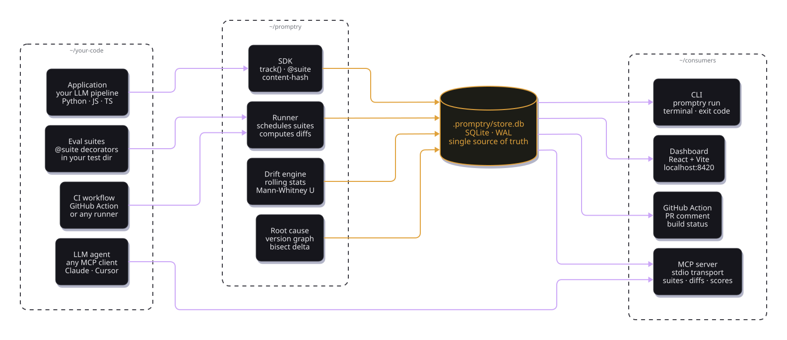

Promptry is a library with a CLI, a dashboard, and an MCP server stapled to the same local store. Every component reads and writes the same SQLite database — no queues, no daemons, no cloud.
Your code talks to the SDK. The SDK talks to SQLite. Everything else reads from SQLite.

The entire product is a thin layer over this schema. Open the database with sqlite3 and every read the dashboard makes is reproducible on the command line.
One row per unique (name, hash). Dedup + auto-incremented version per name.
Named labels like prod, canary. Any version can be compared against a tag.
One row per suite execution. Drift and comparison queries read from here.
Every assertion, every run. Semantic, judge, JSON, regex, grounding, tool-use, conversation.
Thumbs up/down from users. Closes the loop from production back to the eval suite.
Versioned test data. Pin a suite to a dataset version for reproducible runs.
End-to-end on a typical pipeline. Promptry's own overhead is dwarfed by the LLM calls themselves.
Every architectural choice traces back to the same constraint: no service to run, no vendor to trust.